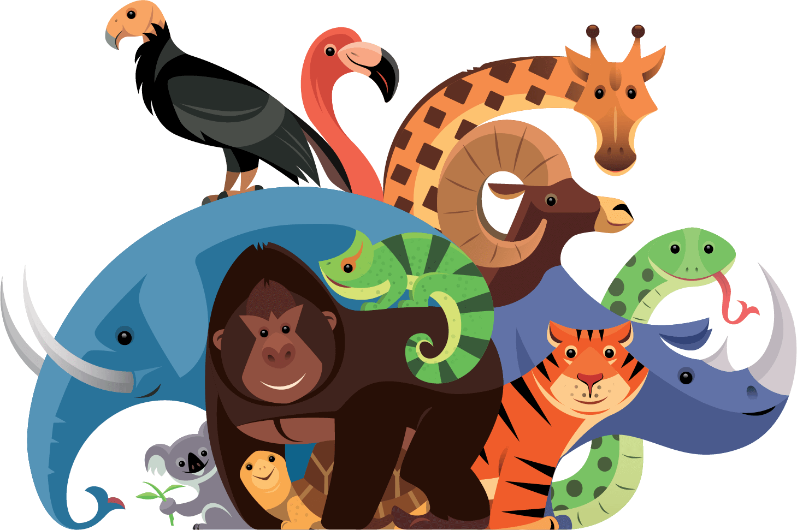

FAUNA SILVESTRE
Fauna silvestre é o conjunto de animais selvagens que vivem em seu ambiente natural, ao contrário dos domesticos que vivem em nosso habitat. As espécies silvestres correm perigo pela ação do homem, tanto na natureza e meio ambiente, quanto na ação direta como o tráfico ilegal de animais para venda dos mesmos.